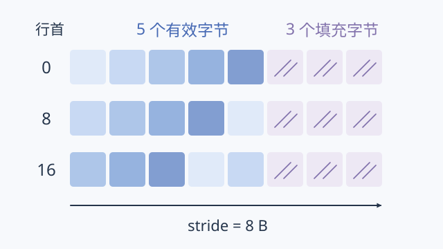

序言
预览窗口偶尔闪出半幅上一帧、半幅下一帧的图像，把程序放慢后又不再发生。要查这类问题，首先得知道相机交付的“一帧”包含什么。一帧常由描述宽高和格式的元数据，以及一块真正盛放像素的内存组成。
宽乘高，为什么还少几个字节
以每像素一字节的灰度图为例，宽 5、高 3，真正显示的像素有 15 个。为了让硬件按固定边界读写，设备可能把每行补到 8 字节。第二行从偏移 8 开始，第三行从偏移 16 开始。相邻行首的间隔叫行跨度，也常写作 stride 或 step。若用每行 5 字节手动推地址，第二行会从上一行的填充值读起，显示结果就可能倾斜或错行。
每像素一字节也未必表示灰度。Bayer 彩色传感器让相邻像素分别测不同颜色，需要按实际滤色阵列排列还原彩色；RGB、BGR 则已经为每个像素存放三个通道。先核对接口上报的格式、通道数、位深、行跨度和有效数据长度。亮度结构正确但红蓝互换时，检查通道顺序；画面出现规则的彩色网格，考虑是否把 Bayer 原始数据直接当作彩色图。
把行跨度写成索引式会更好查错。对上面的单通道八位图，零起点的第 2 行第 3 列从缓冲开头偏移 2 × 8 + 3 = 19 字节。若只给出这幅图所有有效像素所在的最小连续范围，它至少要覆盖到最后一行的最后一个有效位置，即 2 × 8 + 4 = 20，算上首字节共 21 字节。设备分配的整个缓冲可以更大，不能把有效像素数 15、行跨度 8 和分配长度混作同一项。


图像对象和像素可能有不同寿命
OpenCV 可以用已有指针和行跨度构造 cv::Mat。这种做法只创建描述这块内存的对象，通常不会复制设备交来的像素。把这个 Mat 赋给另一个 Mat，复制的也可能只是共享同一数据区的头部。相机 SDK 的采集队列却有自己的规则：释放结果或归还缓冲区后，它可以立即把同一块内存填成下一帧。
假设采集线程把第 41 帧的 Mat 放入显示队列，随即归还设备缓冲。采集线程很快拿到第 42 帧，而显示线程此时才读出那张“41”。即便队列中的帧号仍是 41，它看到的像素也可能已被覆盖。保护显示队列的互斥锁只保证队列操作有序，不能延长 SDK 缓冲区的使用期限。
选择复制，还是持有采集结果
最容易检查的办法是在归还前复制有效图像，例如在确认像素格式与步长正确后用 clone() 得到独立存储，再把副本交给耗时线程。以 1920 × 1080 的八位灰度图为例，每帧有效载荷约 2.07 MB，30 帧/秒仅有效像素的复制量就约 62 MB/s。这个估算可以作为是否需要进一步减少复制的依据。
另一条路是让消费者持有 SDK 规定的采集结果句柄，直到最后一次读取结束再归还。这样可以避免复制，同时也会占用设备池里的缓冲区；消费者太慢时，生产端可能等待或丢帧。用受控的延时让显示线程变慢，逐帧记录序号和一小块像素的校验值，对照“立即复制”和“持有句柄”两种实现。若只有提前归还的版本发生串帧，问题的位置就清楚了。
用一块会被改写的灰度图重现实验
在没有相机的电脑上也能观察别名。准备足以容纳三行、每行八字节的数组，把首列依次写成 11、22、33，其他有效像素清零，填充区统一写成 255。用声明正确步长的图像对象读取首列，能还原三个数字；改用紧密排列的错误步长，再观察第二、三行首列究竟落到了哪个字节。
接着从同一外部数组建立视图和独立副本。在对象仍然有效、且没有并发读写的条件下，把第一行首像素由 11 改成 77，随后分别读取两份图。视图会得到 77，副本仍为 11。这次观察不涉及线程，已经证明两者对像素的所有权不同；据此再设计采集线程的交接协议，会比先给队列加锁更有针对性。